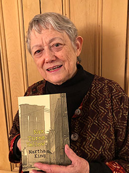

Basil King Art and Writing | Martha King Writing
Basil King
Painter, Writer
Basil King: Mirage trailer*
*Contact us to view the complete film or purchase the BlueRay disc.
New paintings by Basil King ➤
Oil on canvas
2020

